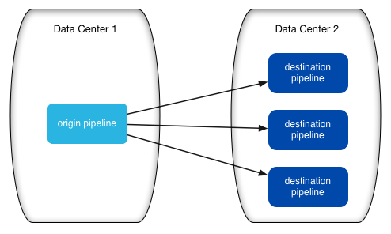
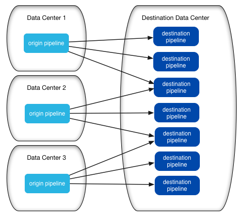

When using RPC pipelines, consider your needs and environment carefully as you design
the deployment architecture.
A few points
to consider:
- Use multiple destination pipelines to improve downstream availability
- To ensure downstream availability, you generally want to deploy the destination pipeline on
additional Data
Collectors. By deploying multiple destination pipelines, you can avoid bottlenecks with a high-volume
origin pipeline:
- 
- If you have multiple data centers with similar data, you might deploy several sets of this
model. This would allow you to process similar data from multiple data centers and store the
data in a destination data center that might use Kafka or HDFS as a final destination:
- 
- Run pipelines on different Data
Collectors
- Though a Data
Collector can run
more than one pipeline, to avoid overburdening a single Data
Collector in a high
volume context, use a different Data
Collector to run each
pipeline.